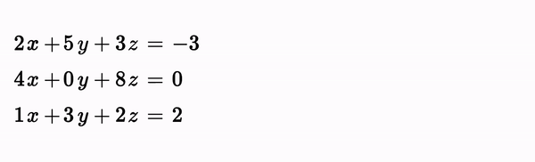
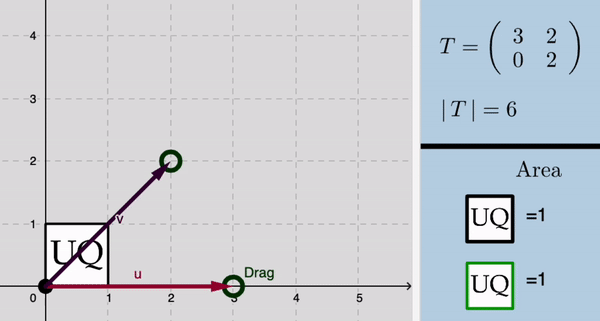
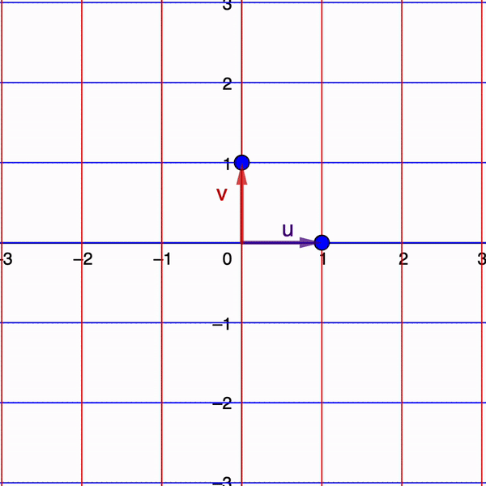
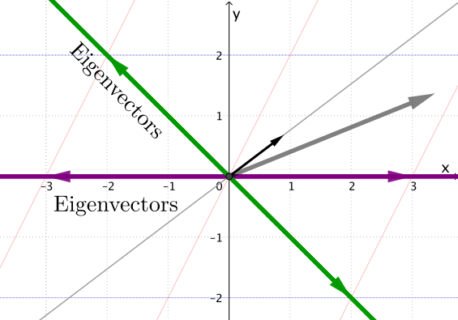

UNIVERSITY OF CANTERBURY
Te Whare Wānanga o Waitaha
CHRISTCHURCH NEW ZEALAND
An introduction to
Eigenvalues and Eigenvectors
Linear Algebra
Previously!
|
Linear systems  |
Determinants
 |
|
$\ds T = \left(\begin{matrix} 3 & 1 \\ 1 & 2 \end{matrix}\right) $ |
 |
Linear transformation
To begin, consider a linear transformation in two dimensions given by a matrix $A$.
Linear transformation
To begin, consider a linear transformation in two dimensions given by a matrix $A$.
Linear transformation
To begin, consider a linear transformation in two dimensions given by a matrix $A$.
Linear transformation
To begin, consider a linear transformation in two dimensions given by a matrix $A$.
Linear transformation
Considering the matrix $A = \left(\begin{matrix} 3 & 1 \\ 0 & 2 \end{matrix}\right). $




Eigenvalues and Eigenvectors
If $A $ is an $n\times n$ matrix, then $\v$ is an eigenvector if
$A \v $ $ = \lambda \v$
The scalar $\lambda$ is an eigenvalue of $A$, and we say that $\v$ is an eigenvector corresponding to $\lambda.$
Eigenvalues and Eigenvectors
Matrix-vector multiplication $\qquad \qquad$
| $\uparrow$ | ||
| $A\mathbf v $ | $ = $ | $\lambda \v$ |
| $ \downarrow$ |
$\qquad \qquad$ Scalar multiplication
Eigenvalues and Eigenvectors
$A \v = \lambda \v$
to make sense of this equation, consider the $3\times 3$ identity matrix:
$I = \left(\begin{array}{ccc} 1 & 0 & 0 \\ 0 & 1 & 0 \\ 0 & 0 & 1 \\ \end{array}\right) $
Eigenvalues and Eigenvectors
$A \v = \lambda \v$
Multiply by $\lambda$ to obtain:
$\lambda I = \left(\begin{array}{ccc} \lambda & 0 & 0 \\ 0 & \lambda & 0 \\ 0 & 0 & \lambda \\ \end{array}\right) $
Eigenvalues and Eigenvectors
$A \v =\left( \lambda I\right)\v$
$\lambda I = \left(\begin{array}{ccc} \lambda & 0 & 0 \\ 0 & \lambda & 0 \\ 0 & 0 & \lambda \\ \end{array}\right) $
Eigenvalues and Eigenvectors
$A \v =\left( \lambda I\right)\v$
$\Ra \,A \v -\left( \lambda I\right) \v=\mathbf 0$
$\Ra \,\left(A - \lambda I\right) \v=\mathbf 0$
Eigenvalues and Eigenvectors
$\underbrace{\left(A - \lambda I\right)}{} \v=\mathbf 0$
This matrix looks like $\qquad\qquad\qquad $
$ \left(\begin{array}{ccc} 3-\lambda & -1 & 2 \\ 2 & 5-\lambda & 4 \\ 1 & 3 & 5-\lambda \\ \end{array}\right) $$\qquad\qquad \qquad$
Eigenvalues and Eigenvectors
$\left(A - \lambda I\right) \v=\mathbf 0$
We want a nonzero vector $\v$ satisfying this equation.
For this, recall that
$ \text{det}\left(A - \lambda I\right) =0 $
Eigenvalues and Eigenvectors
$\left(A - \lambda I\right) \v=\mathbf 0$
$ \text{det}\left(A - \lambda I\right) =0 $
Example
Consider the matrix $A = \left(\begin{matrix} 3 & 1 \\ 0 & 2 \end{matrix}\right). $
First, to compute the eigenvalues $\lambda,$ we set the matrix
$A - \lambda I $ $ = \left(\begin{matrix} 3- \lambda & 1 \\ 0 & 2 -\lambda \end{matrix}\right). $
Then we compute the determinant
$ \text{det} \left(\begin{matrix} 3- \lambda & 1 \\ 0 & 2 -\lambda \end{matrix}\right) $ $ = \left(3- \lambda \right)\left(2- \lambda \right) $ $ = 0. $
Thus the eigenvalues are $\lambda =2$ and $\lambda = 3.$
Example
Consider the matrix $A = \left(\begin{matrix} 3 & 1 \\ 0 & 2 \end{matrix}\right). $
Thus the eigenvalues are $\lambda =2$ and $\lambda = 3.$
To figure out an eigenvector corresponging to the eigenvalue $\lambda =2,$ we plug in this value to the matrix
$ \left(\begin{matrix} 3- \lambda & 1 \\ 0 & 2 -\lambda \end{matrix}\right) $ $= \left(\begin{matrix} 3- 2 & 1 \\ 0 & 2 -2 \end{matrix}\right). $
Then we use our equation $\,\left(A-\lambda I\right)\v = \mathbf 0\,$ to obtain
$ \left(\begin{matrix} 3- 2 & 1 \\ 0 & 2 -2 \end{matrix}\right) \left(\begin{matrix} x \\ y \end{matrix}\right)= \left(\begin{matrix} 0 \\ 0 \end{matrix}\right). $
Example
Consider the matrix $A = \left(\begin{matrix} 3 & 1 \\ 0 & 2 \end{matrix}\right). $
$ \left(A-\lambda I\right)\v = \mathbf 0 \,\Ra\, \left(\begin{matrix} 3- 2 & 1 \\ 0 & 2 -2 \end{matrix}\right) \left(\begin{matrix} x \\ y \end{matrix}\right)= \left(\begin{matrix} 0 \\ 0 \end{matrix}\right) $
$ \; \; \Ra\, \left(\begin{matrix} 1 & 1 \\ 0 & 0 \end{matrix}\right) \left(\begin{matrix} x \\ y \end{matrix}\right)= \left(\begin{matrix} 0 \\ 0 \end{matrix}\right) $
$\Ra \left\{ \begin{array}{ccccc} x & +& y & = & 0\\ 0 x &+& 0 y & = & 0\\ \end{array} \right. $ $\;\;\Ra\;\; x = -y. $
Example
Consider the matrix $A = \left(\begin{matrix} 3 & 1 \\ 0 & 2 \end{matrix}\right). $
$\Ra \left\{ \begin{array}{ccccc} x & +& y & = & 0\\ 0 x &+& 0 y & = & 0\\ \end{array} \right. $ $\;\;\Ra\;\; x = -y. $
Thus $\, \v $ $= \left(\begin{matrix} x \\ y \end{matrix}\right) $ $= \left(\begin{matrix} -y \\ y \end{matrix}\right) $ $=y \left(\begin{matrix} -1 \\ 1 \end{matrix}\right),\; $ $ (y \text{ is a scalar}). $
Hence an eigenvector corresponding to $\lambda =2\,$ is $\, \left(\begin{matrix} -1 \\ 1 \end{matrix}\right). $
Example
Consider the matrix $A = \left(\begin{matrix} 3 & 1 \\ 0 & 2 \end{matrix}\right). $
Now to compute an eigenvector corresponging to the eigenvalue $\lambda =3,$ we plug in this value to the matrix
$ \left(\begin{matrix} 3- \lambda & 1 \\ 0 & 2 -\lambda \end{matrix}\right) $ $= \left(\begin{matrix} 3- 3 & 1 \\ 0 & 2 -3 \end{matrix}\right). $
Again we use our equation $\,\left(A-\lambda I\right)\v = \mathbf 0\,$ to obtain
$ \left(\begin{matrix} 3- 3 & 1 \\ 0 & 2 -3 \end{matrix}\right) \left(\begin{matrix} x \\ y \end{matrix}\right)= \left(\begin{matrix} 0 \\ 0 \end{matrix}\right). $
Example
Consider the matrix $A = \left(\begin{matrix} 3 & 1 \\ 0 & 2 \end{matrix}\right). $
$ \left(A-\lambda I\right)\v = \mathbf 0 \,\Ra\, \left(\begin{matrix} 3- 3 & 1 \\ 0 & 2 -3 \end{matrix}\right) \left(\begin{matrix} x \\ y \end{matrix}\right)= \left(\begin{matrix} 0 \\ 0 \end{matrix}\right). $
$ \,\Ra\, \left(\begin{matrix} 0 & 1 \\ 0 & -1 \end{matrix}\right) \left(\begin{matrix} x \\ y \end{matrix}\right)= \left(\begin{matrix} 0 \\ 0 \end{matrix}\right) $
$\Ra \left\{ \begin{array}{ccccc} 0x & +& y & = & 0\\ 0x &-& y & = & 0\\ \end{array} \right. $ $\;\Ra y = 0\, $ & $\,x$ is a free variable.
Example
Consider the matrix $A = \left(\begin{matrix} 3 & 1 \\ 0 & 2 \end{matrix}\right). $
$\Ra \left\{ \begin{array}{ccccc} 0x & +& y & = & 0\\ 0x &-& y & = & 0\\ \end{array} \right. $ $\;\Ra y = 0\, $ & $\,x$ is a free variable.
Thus $\, \v $ $= \left(\begin{matrix} x \\ y \end{matrix}\right) $ $= \left(\begin{matrix} x \\ 0 \end{matrix}\right) $ $=x \left(\begin{matrix} 1 \\ 0 \end{matrix}\right),\; $ $ (x \text{ is a scalar}). $
Hence an eigenvector corresponding to $\lambda =3\,$ is $\, \left(\begin{matrix} 1 \\ 0 \end{matrix}\right). $
Example
Consider the matrix $A = \left(\begin{matrix} 3 & 1 \\ 0 & 2 \end{matrix}\right). $
In summary
|
📝 Practice 😁
Find the eigenvalues and eigenvectors of
a) \( \left( \begin{array}{r} \sqrt{2} & 1 \\ 1 & \sqrt{2} \end{array} \right) \)
b) \( \left( \begin{array}{r} 5 & 4 \\ 3 & 1 \end{array} \right) \)
b) \( \left( \begin{array}{r} 1 & 1 \\ 1 & 1 \end{array} \right) \)